Under Review
| 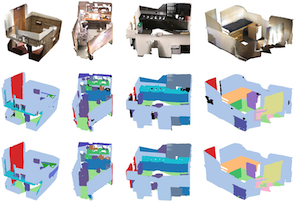 | Hypergraph Convolutional Network based Weakly Supervised Point Cloud Semantic Segmentation with Scene-Level Annotations |
| 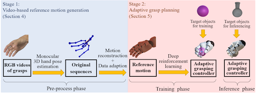 | Video Driven Adaptive Grasp Planning of Virtual Hand Using Deep Reinforcement Learning |
| 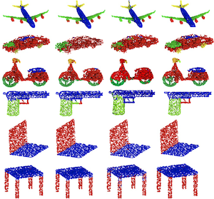 | 基于伪标签生成与噪声标签学习的弱监督点云分割 |
Selected Publications
 |
Slicing-Tracking-Detection: Simultaneous Multi-Cylinder Detection from Large-scale and Complex Point Clouds |
 |
Learning to Hash for Personalized Image Authentication |
 |
Robust 2D Engineering CAD Graphics Hashing for Joint Topology and Geometry Authentication via Covariance-Based Descriptors |
International Journal Publications
| 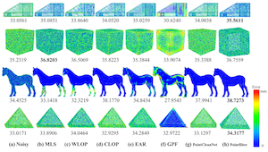 | Point cloud denoising review: from classical to state-of-the-art approaches |
| 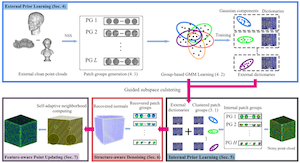 | Structure-Aware Denoising for Real-world Noisy Point Clouds with Complex Structures |
|
|
Slicing-Tracking-Detection: Simultaneous Multi-Cylinder Detection from Large-scale and Complex Point Clouds |
| 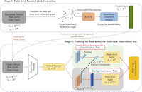 | A Weakly Supervised Framework for Real-world Point Cloud Classification |
| 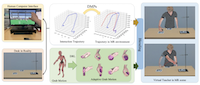 | A Novel Animation Authoring Framework for the Virtual Teacher Performing Experiment in Mixed Reality |
|
|
Learning to Hash for Personalized Image Authentication |
| 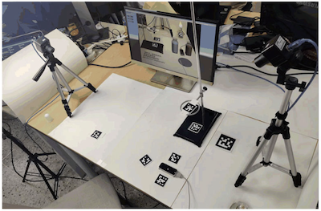 | An Augmented Reality-based Multimedia Environment for Experimental Education |
 |
Partial Matching of Large Scale Process Plant Models Using Random Walk on Graphs |
|
|
Robust 2D Engineering CAD Graphics Hashing for Joint Topology and Geometry Authentication via Covariance-Based Descriptors |
 |
A Unified Framework for Authenticating Topology Integrity of 2D Heterogeneous Engineering CAD Drawings |
 |
Topology based 2D engineering drawing and 3D model matching for process plant |
 |
Topology Authentication for Piping Isometric Drawings |
 |
Authenticating topological integrity of process plant models through digital watermarking |
 |
Watermarking 3D CAPD models for topology verification |
 |
Topology authentication for CAPD models based on Laplacian coordinates |
Domestic Journal Publications
| 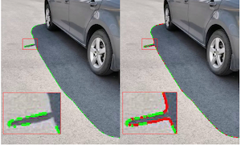 | 面向移动增强现实的室外阴影实时检测技术 |
| 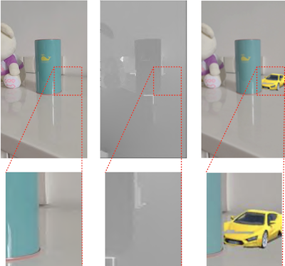 | 基于投票决策的实时遮挡处理技术 |
基于深度强化学习的虚拟手自适应抓取研究 |
| 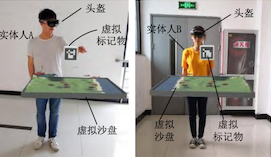 | 面向AR虚拟沙盘的虚拟化身定位定向技术研究 |
 |
面向AR虚实士兵对抗训练的分布式感知技术 |
| 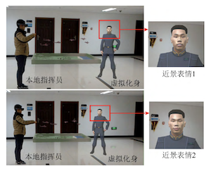 | 面向虚拟化身的人脸表情模拟技术 |
| 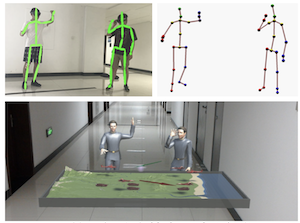 | 面向AR沙盘异地协同标绘的动作重构技术 |
| 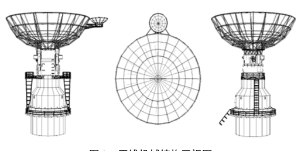 | 船载天线雷达系统优化建模与仿真研究 |
| 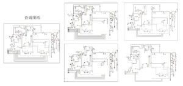 | 基于哈希的二维工程CAD图纸检索技术 |
| 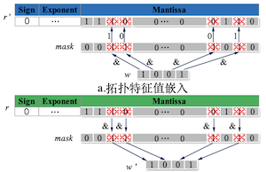 | 面向二维工程CAD图的拓扑完整性校验算法 |
| 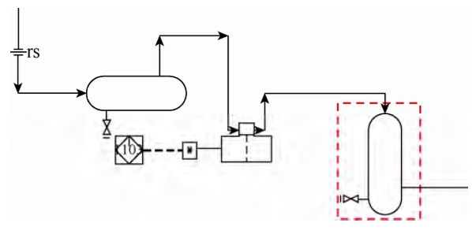 | 基于哈希的二维工程CAD图拓扑关系认证技术 |
| 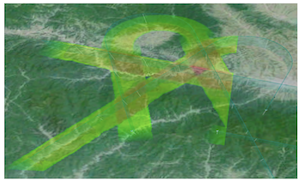 | 无人机协同路径规划三维实时可视化仿真平台 |
| 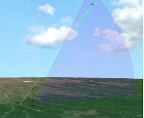 | 强激光武器协同防空作战仿真系统设计 |
| 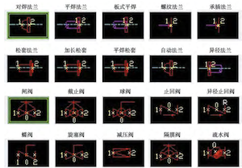 | 流程工厂设计中的规则挖掘与智能预测 |
| 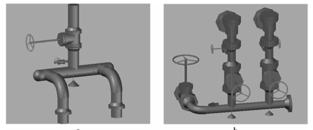 | 基于编辑距离的大规模流程工厂模型局部检索算法 |
| 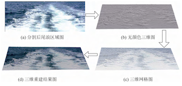 | 基于单视点视频的舰艇尾浪三维重建 |
| 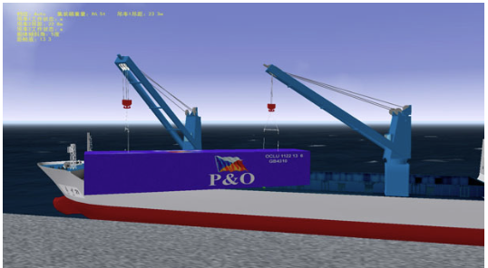 | 火箭运输船协同吊装模拟训练系统的研究与实现 |